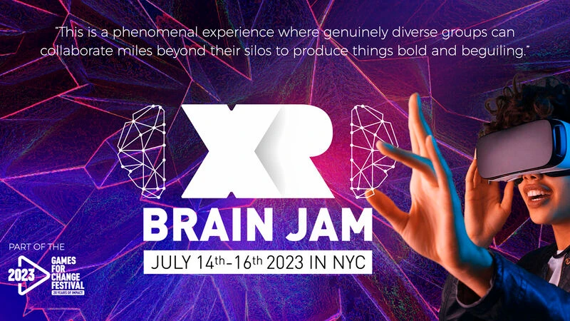
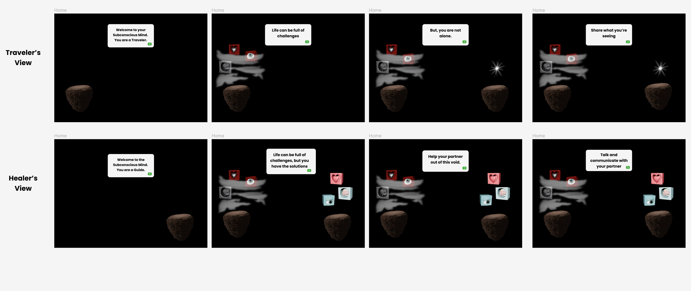
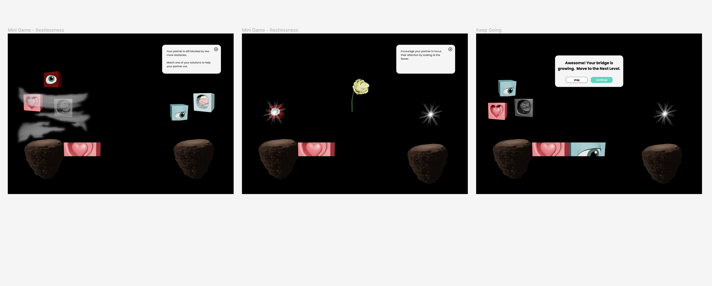
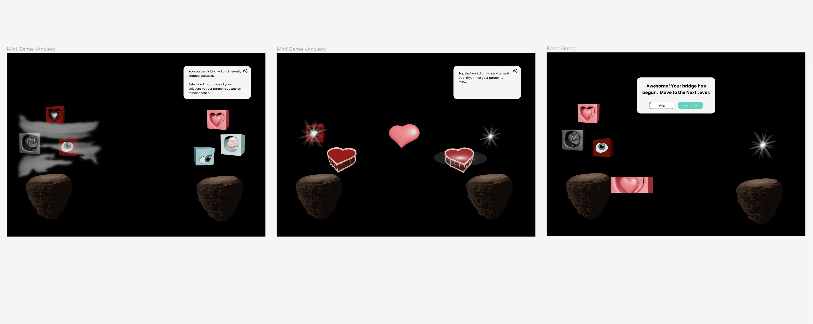
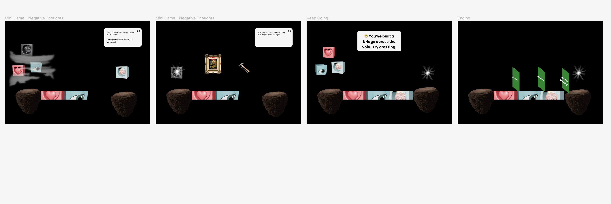

Bridging the Void - July 2023
Designer & Engineer | XR Brain Jam 2023, Games for Change Festival

Bridging the Void is a co-op journey through the self, made at the XR Brain Jam, a three day jam in New York City that was part of the 2023 Games for Change Festival. Our team of seven made an XR experience that teaches players about mental health, therapeutic techniques, empathy, and social support.
Two players take on different roles: a guide who shares tools, and a traveler who faces emotional obstacles. They are separated by a void and fog, and have to communicate through mini-games. Overcoming each obstacle builds a bridge and clears the fog. The tools are based on real therapeutic techniques, and the prototype uses biofeedback, heart rate and eye blinks, to adjust the difficulty and encourage self-regulation.
I was the designer for the first half of the project and the engineer for the second half. We networked two Magic Leap 2 headsets together so that both players could be in the experience at the same time. The demo has one rhythm based mini-game, and we designed three more to address restlessness, anxiety, and negative self-thoughts.
Design screens
The traveler and the guide each see a different view of the same world, so the design had to work for both players at once.

Mini-game: restlessness. Partners match solutions to obstacles and focus on a flower to grow the bridge.

Mini-game: anxiety. The guide taps a heart drum to send a heartbeat rhythm for the traveler to follow.

Mini-game: negative thoughts, and the ending where the bridge is complete.
